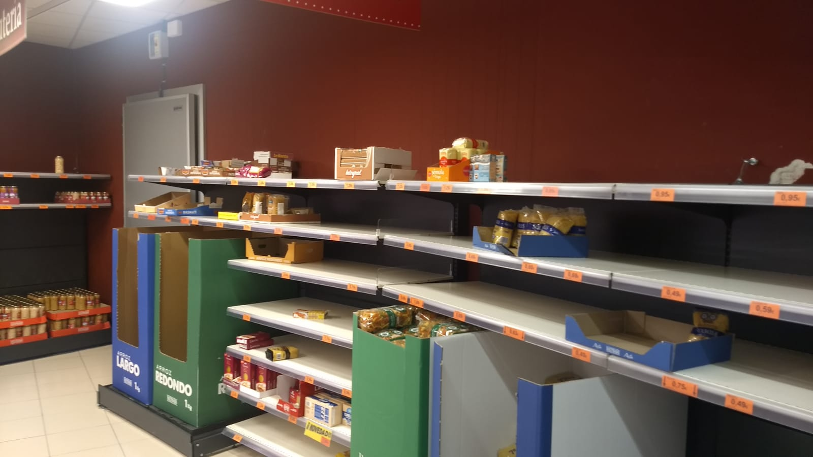
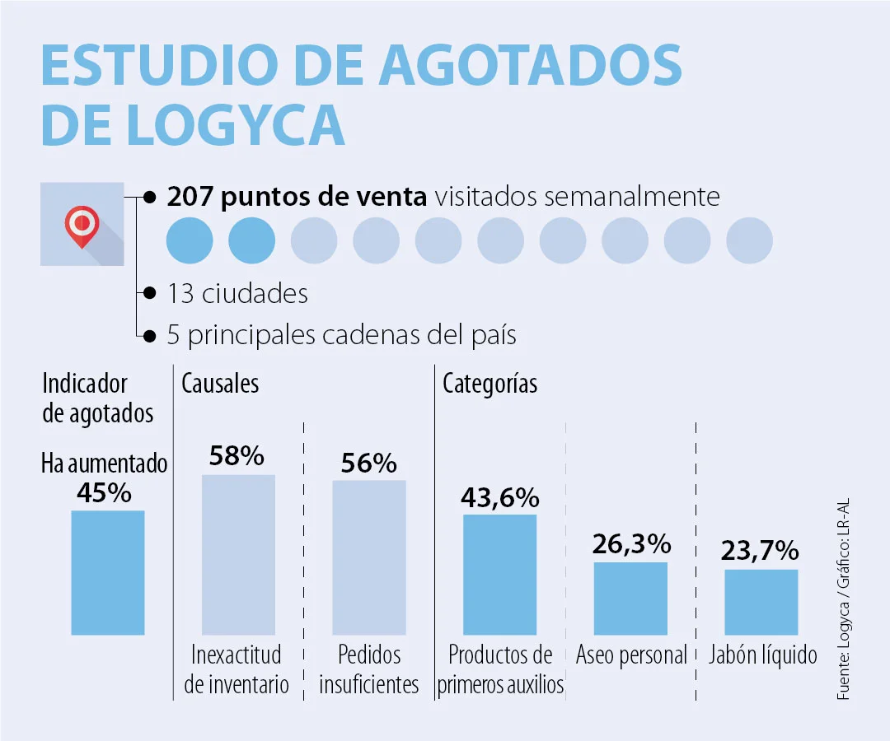
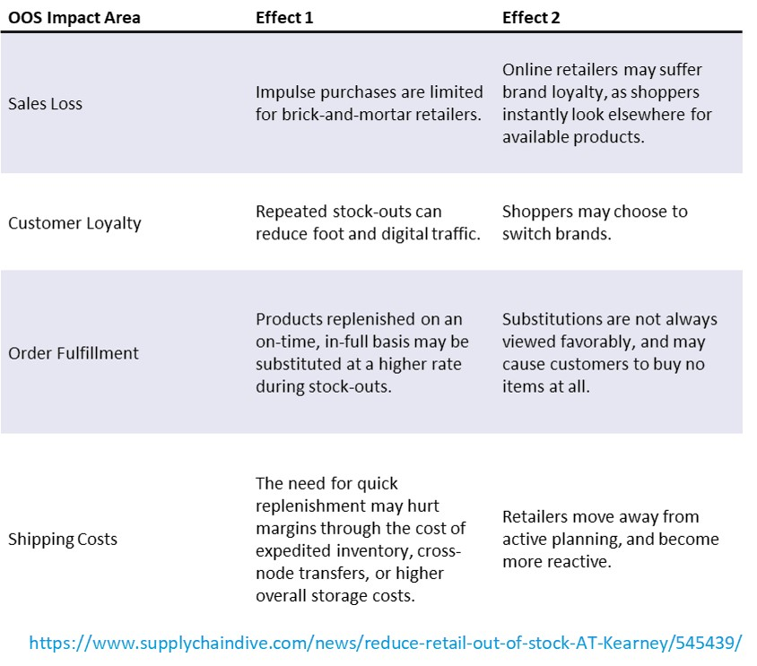

Describe the problem you want to solve with this project

Ensuring product availability on the shelf is essential for today's
retail sector,
so much so that it is considered a measure of retail performance. Retail is a highly
competitive industry
and it is imperative to ensure that products are on the shelf when the customer is
buying them.
Consumers still prefer to shop at retail stores, but low shelf availability and a
high number of
out-of-stock events can affect their experience. Customers go to the retail outlet
to find the products
they want; if they cannot find what they are looking for on the shelves, they will
choose a substitute product,
leave empty-handed, or turn to a competitor to satisfy their needs. In each case,
the retailer,
the manufacturer and the customer all lose out.
What are the expected results of this project?
Out-of-stocks is a major problem in retailing, as it leads to lost sales and reduced consumer loyalty,
because the term "out-of-stock" is used to describe a situation where a consumer cannot find the product on the shelf
at the time he or she wants to buy it. In addition, product shortages on the shelves can affect consumers' choices in the future.
Why is it important to solve this problem?
A predictive analytics solution to identify the causes or main factors affecting the lack of products, as well as the magnitude and frequency on the shelves of the points of sale during the year 2021.

Items associated with first aid, personal hygiene and liquid soap are
the most scarce
in supermarket shelves and supermarkets.
After the announcement of the mandatory quarantine decreed by the
National Government
until April 12 at 11:59 p.m.,
in addition to the curfews and isolation drills promoted by several local leaders,
citizens have sought to stock up in supermarkets and major chains in the country.
Logyca presented a study of out-of-stock products on shelves,
according to which
during March there has been an
increase of 45% in the out-of-stock indicator compared to the same month of 2019.
According to the logistics solutions company, the main causes of this situation are
inventory inaccuracy (58%)
and insufficient orders (56%).
The study, which the company has been conducting for 15 years,
collects data through
weekly visits to 207 points of sale, of the five main chains in the country, and
located in 13 cities.
The products that have sold out the most on the shelves are items
associated with
first aid (with an out-of-stock indicator of 43.6%), personal hygiene (26.3%) and
liquid soap (23.7%).
In addition, for Saturday, March 14 and Sunday, March 15, there were
increases of 10%
and 21%, respectively, in units sold compared to the previous weekend.
For these reasons, the company joined the call made by unions,
manufacturers of basic
necessities and supermarket chains and stores for citizens to shop responsibly and
not to hoard supplies.
The importance of the out-of-stock study
It should come as no surprise to anyone that out-of-stocks (OOS) are a critical problem for every retailer.
But what continues to surprise is the lack of progress some retailers have made in controlling a problem that,
while it may never be completely eliminated, can be successfully mitigated.
Stock-outs are the result of many factors from customer satisfaction to poor communication between vendors and retailers.
But regardless of their cause, the fact remains that in-stock performance is both top of mind for most retailers
and agnostic to trade channel or class.
For brick-and-mortar retailers, in-stock performance — most commonly calculated as share of assortment that
has at-least one unit in store — is a critical litmus test for supply chains dependent on year-round assortments.
It’s logical to link assortment out-of-stocks to potential lost sales and subsequently margin loss.
But the problem carries longer costs, too. Customer dissatisfaction, shopper defection and lost retail brand
reputation are but a few.
Frequently, retailers overcorrect by holding higher inventory or spending hard fought gross margin dollars on expediting
movement of goods. But preventing out-of-stocks today is possible, once the causes and
effects are properly identified.
A.T. Kearney sees out-of-stocks impacting four key areas: loss of sales, customer loyalty, online order fulfillment
from the store and shipping costs that eventually lead to margin erosion.
The impact of OOS is nuanced. It affects planned purchases differently than impulse buys; core basket items
separately from brand items; and digital retailers differently from online merchants.
But the event’s consequences remain negative and avoidable.

So, what should retailers do?
Start with accurate measurements
Measurement and out-of-stock reduction go hand-in-hand.
Out of stock is measured against store inventory, and the accuracy of that inventory is a leading contributor to OOS.
What makes reducing OOS particularly challenging is that visible out of stock performance — easily captured by a store
walk through — often tells a different story than system measurements do.
Getting an accurate OOS measurement is a starting point for the solution, and better in-stock position
starts with in-store inventory management and replenishment.